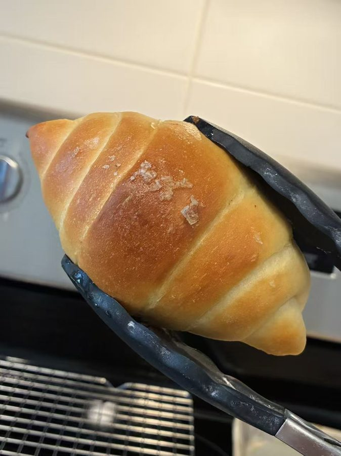

Make the dough
-
Mix
Combine everything for the dough except the butter and salt: bread flour, cake flour, yeast, sugar, and milk. Mix until no dry flour remains.
The 30-minute rest is optional here. This is a lower-hydration dough, so you can go straight to kneading. Resting it still helps, though, especially if you knead by hand. -
Knead in butter and salt
Knead until the dough forms a rough film when stretched. Add the butter and salt and keep kneading until the dough is roughly smooth, about 80% developed.
No windowpane needed. A roughly smooth dough is all this one needs. -
Rest
Cover the dough and let it rest. This is mostly to let it relax, not to rise much.
About 30 min -
Cut the butter sticks
While the dough rests, cut the cold butter into 10 sticks of 8–10 g, each about as long and wide as the top two joints of your index finger. Keep them in the fridge.
Shape
-
Divide and shape teardrops
Divide the dough into pieces of 85–90 g. Flatten each one, then roll one end thinner to make a teardrop, like a short carrot. Cover and chill them in the fridge to relax.
Chill 30–40 min -
Roll out a long triangle
Take one teardrop out of the fridge and set it on the counter with no flour. Press the wide end flat. Holding the thin end in one hand and the rolling pin in the other, roll while gently pulling to stretch it out. You want a long, narrow triangle, at least 12–15 inches long.
-
Add butter and roll up
Set a stick of butter on the wide end and roll the dough up toward the point. Place it on the baking tray with the tip tucked underneath.
Working slowly? Take the teardrops out of the fridge one at a time, and put each shaped roll back in the fridge. Then proof them all together.
Bake
-
Final proof
Let the rolls rise until puffy. Preheat the oven to 360°F toward the end.
-
Top and bake
Mist the tops with water until they’re mostly damp, so the topping sticks, then sprinkle with sesame seeds or flaky salt. Bake on the lower-middle rack at 360°F until the tops are golden. Every oven is a little different, so go by color.
Flaky salt is best the same day. If the rolls sit in a bag overnight, moisture from the bread dissolves the salt into the crust. If they’ll be packed for the next day, sesame is the better choice.16–20 min at 360°F -

Brush with butter
Brush the hot rolls with melted butter. The bottoms should be golden brown and crisp from the butter that melted out during baking.